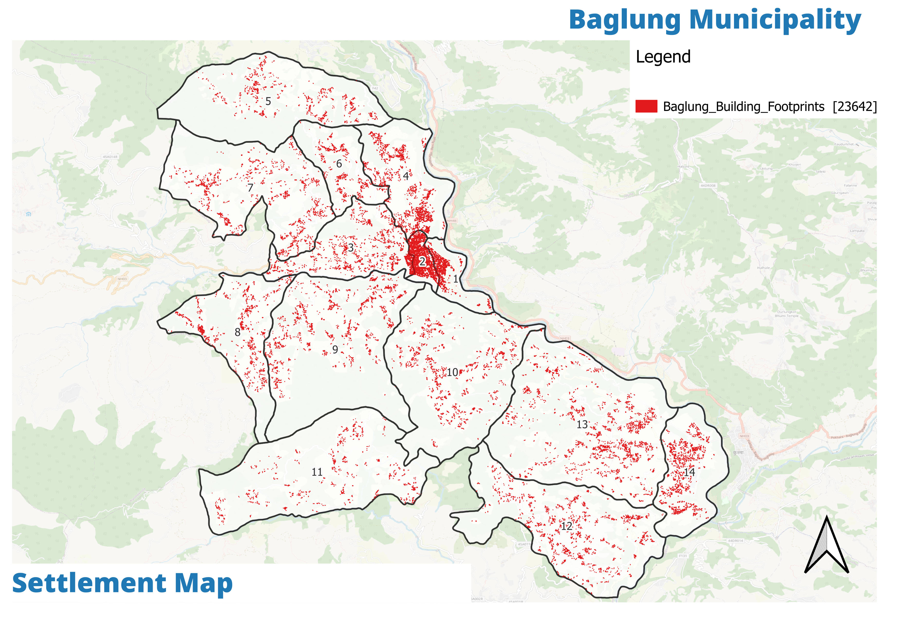

The situation

The tree-like road system concentrates on the Odarchaur–Kudule axis and the bazaar core; hill wards fan out along narrow feeder roads.

645–2,679 m relief — blacktop is 4–10× costlier per km in the hills, which is why 87% of the network is still earthen or gravel.
Clusters hug the all-weather spine; the emptier hill wards carry the highest per-capita infrastructure cost.
A connected core on paper, a cut-off one on the ground
The bazaar core (Wards 1–4) runs on 5–8 m rights-of-way against the 10–30 m Nepal Urban Road Standard (2011). The same geography that makes Baglung a hill market town makes its infrastructure expensive and fragile.
Road network
Topography

Settlements
Baseline numbers. 88.7% of households have piped water, but Ward 12 still counts 1,002 unimproved households and Wards 9–11 have no pucca supply; 47.1 km of blacktop was added in the last four years (12 km under NUGIP). The Davgara Bus Park carries an NPR 9 cr TDF debt.